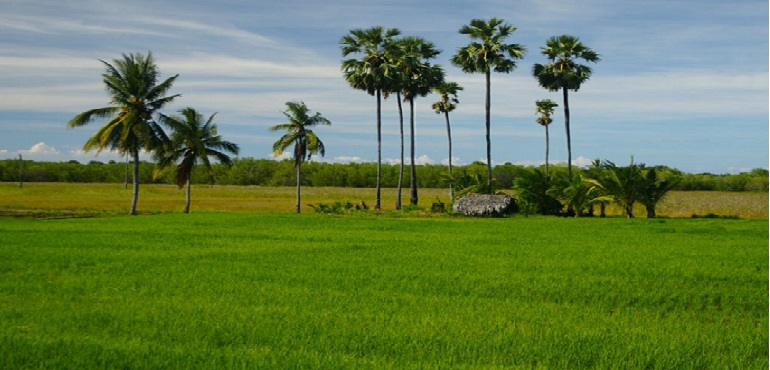
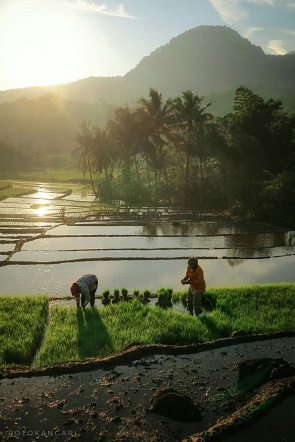

Apa Itu Sektor Pertanian? Manfaat, dan Pertanian Berkelanjutan
Salah satu sektor utama yang menggerakan perekonomian di Indonesia yaitu
sektor pertanian. Sektor pertanian memberikan banyak dampak bagi perkembangan
ekonomi di Indonesia. Tugas sektor pertanian ini pada dasarnya adalah menyediakan
bahan pangan bagi seluruh masyarakat, kemudian dijual ke dalam negeri dan luar negeri
untuk mendapatkan keuntungan. Sektor pertanian juga memiliki tugas besar untuk memastikan
kesediaan bahan pangan bagi masyarakat.
Dari penjelasan tersebut, dapat dilihat bahwa fungsi sektor pertanian adalah
memastikan ketersediaan pangan bagi masyarakat. Nah, pada pembahasan berikut
ini kami akan membahas seputar pertanian. Bagi Anda yang berminat dengan dunia
pertanian, di perkuliahan juga terdapat jurusan Pertanian. Jurusan ini juga merupakan
jurusan kuliah yang memiliki banyak peminat. Siapa tahu, Anda bisa menjadi petani muda
yang sukses dan ikut berperan dalam meningkatkan perekonomian di Indonesia.
Pengertian Pertanian
Pertanian adalah suatu kegiatan yang memanfaatkan sumber daya alam untuk menghasilkan
bahan pangan, sumber energy, bahan baku industri, serta untuk mengelola lingkungan hidup.
Contoh kegiatan di bidang pertanian adalah bercocok tanam, budidaya tanaman, dan pembesaran
hewan ternak.
Pengertian Pertanian Menurut Para Ahli
Menurut ahli Mosher, pertanian merupakan suatu bentuk produksi yang khas, yang berkaitan
dengan proses pertumbuhan tanaman dan hewan.
Sedangkan Van Aarsten, pertanian adalah digunakannya kegiatan manusia untuk memperoleh hasil
yang berasal dari tumbuh-tumbuhan dan atau hewan.
1. Mendukung Kedaulatan Pangan
Pertanian merupakan sumber utama pangan dalam suatu negara. Jika sektor pertanian tidak dapat
memenuhi kebutuhan masyarakatnya, maka negara akan terus menerus mengimpor bahan pangan dari
negara lain.
2. Mengurangi Pengangguran
Kegiatan bertani bermanfaat bagi masyarakat untuk memperoleh pendapatan. Dengan begitu,
sekaligus mengurangi pengangguran. Saat ini, banyak pemuda yang sudah mulai terjun ke dunia
pertanian dan memiliki banyak inovasi dari kegiatan bertaninya. Jika mereka mau mengelola
pertanian sendiri, maka angka pengangguranpun akan berkurang.
3. Menjaga Lingkungan
Dengan bertani, maka menjaga kualitas lingkungan. Terdapat rantai makanan yang selalu membuat
ekologi dalam keadaan seimbang.
Jenis Pertanian
1. Pertanian Modern
Pertanian modern merupakan proses bertani dengan menggunakan peralatan canggih dalam
memudahkan proses produksi serta meningkatkan hasil pertanian dalam waktu yang cepat.
Dengan bantuan teknologi, maka kegiatan bertani lebih efisien.
Sektor pertanian yang semakin modern merupakan suatu keberhasilan bagi sektor pertanian
di Indonesia. Hal ini turut berpengaruh besar dengan hasil panen yang diproduksi.
Semakin banyak hasil yang diperoleh, maka sistem pertanian modern ini dianggap maju
dan menguntungkan. Manfaat besar pertanian modern adalah meningkatkan nilai ekspor,
berkembangnya sistem agribisnis, dan mengefisiensikan pekerjaan.
2. Pertanian Organik
Pertanian organik adalah suatu rangkaian yang terjadi daur ulang unsur hara melalui
lebih dari satu tahapan berbentuk senyawa organik sebelum diserap tanaman. Tujuan
dari pertanian organik adalah untuk menghasilkan bahan pangan yang bebas bahan
kimia dan berkualitas lebih sehat, melestarikan lingkungan, dan meningkatkan
pendapatan petani. Pendapatan petani dapat meningkat seiring bahan pangan yang
dihasilkan lebih berkualitas karena proses pertanian organik.
Saat ini masyarakat modern mulai menyadari pentingnya mengonsumsi makanan
organik. Seiring dengan perkembangan zaman, sektor pertanian juga ikut
berkembang misalnya adalah sektor pertanian hanya sebatas bercocok tanam.
Maka saat ini kegiatan bercocok tanam ini dianggap sebagai proses keseluruhan
mulai dari produksi oleh produsen hingga produk sampai di tangan konsumen.
Pertanian Berkelanjutan

Pertanian merupakan suatu kegiatan masyarakat dalam memperoleh pendapatan,
disamping itu bermanfaat dalam meningkatkan kegiatan perekonomian negara.
Teori ekonomi klasik telah mengajarkan bahwa apabila produsen menginginkan
keuntungan maksimal, maka sumber daya yang ada harus dimanfaatkan
sebesar-besarnya.
Akan tetapi, teori ini sepenuhnya disadari oleh banyak kalangan, bahwa dalam
pemanfaatan sumberdaya perlu memperhatikan aspek keberlanjutan. Aspek keberlanjutan
di bidang pertanian erat hubungannya dengan aspek ekologi.
Alasannya adalah dalam aktivitas pertanian membutuhkan lingkungan dalam menjalani
prosesnya. Oleh sebab itu, konsep utama dalam pertanian yang berkelanjutan adalah
berwawasan lingkungan.
Manfaat Pertanian Berkelanjutan
Manfaat dari pertanian berkelanjutan sangat banyak, mengingat bertani memang
memiliki banyak manfaat dari segi apa saja. Namun, sesuatu yang memiliki konsep
berkepanjangan dengan memperhatikan waktu, karena memang manfaatnya akan dirasakan
dalam jangka panjang. Setidaknya terdapat 5 manfaat utama pertanian berkelanjutan,
diantaranya:
1. Produksi hasil pertanian yang stabil sepanjang tahun,
2. Dapat mencegah terjadinya kerusakan lingkungan,
3. Keuntungan ekonomi berupa penghematan biaya,
4. Hasil produk pertanian lebih sehat, dan
5. Kelestarian ekologi tetap terjaga.
Penerapan dalam konsep pertanian berkelanjutan menjadikan suatu lahan mampu
berproduksi secara jangka panjang. Prinsip ramah lingkungan membuat suatu lahan
pertanian berkelanjutan dapat terus digunakan tanpa risiko terjadi kendala.
Kondisi ini berdampak pada kestabilan ekonomi, karena tidak terjadi pasang
surut komoditas yang terlalu signifikan. Kebutuhan akan produk pertanian dapat
dikontrol dengan program intensifikasi lahan.
Kesimpulan
Manfaat lainnya pertanian berkelanjutan ini dapat mencegah kerusakan lingkungan.
Pencegahan kerusakan lahan biasanya dilakukan dengan memperhatikan penggunaan pupuk
dan pestisida. Pupuk dan pestisida yang digunakan lebih ke arah organik ataupun
semi organik yang dapat terurai dengan baik secara alami. Sehingga, penurunan
kualitas air dan kerusakan fisika-kimia tanah dapat dicegah dengan baik.
Selanjutnya, pertanian berkelanjutan dapat meminimalisir pengeluaran biaya.
Biaya yang dapat diminamilisir adalah biaya produksi dan perbaikan lahan seperti
pengaturan pH tanah, pemberian pupuk, dan lainnya itu semua dapat dikurangi.
Selain itu juga mengurangi biaya produksi.
Mengapa biaya ini dapat meminimalisir? Karena pertanian berkelanjutan
sebenarnya tidak terlalu menurunkan banyak kualitas lahan. Manfaat berikutnya
adalah hasil pertanian yang dihasilkan ini bisa lebih sehat bagi produsen
seperti tanaman, ternak, dan tanah, sampai ke bagi konsumen.
Sehat bagi produsen karena lingkungannya juga sehat, dalam arti kondisi faktor
produksi dan produknya sangat baik. Karena, memang pertanian berkelanjutan itu
dibuat agar mirip dengan kondisi seperti aslinya dari alam.


02 Comments
Jodi Putra
Dec 09 2020Informasi yang sangat bermanfaat
Misyelia
Feb 23 2021Terimakasih informasinya